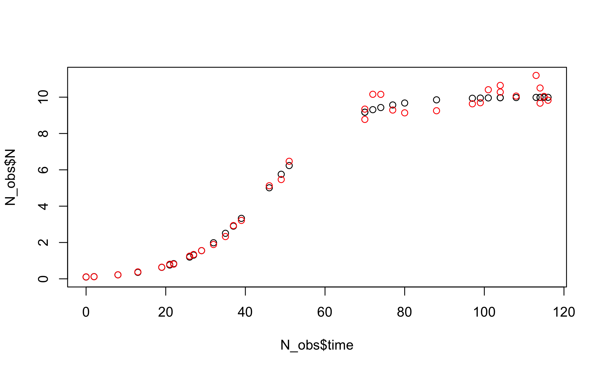
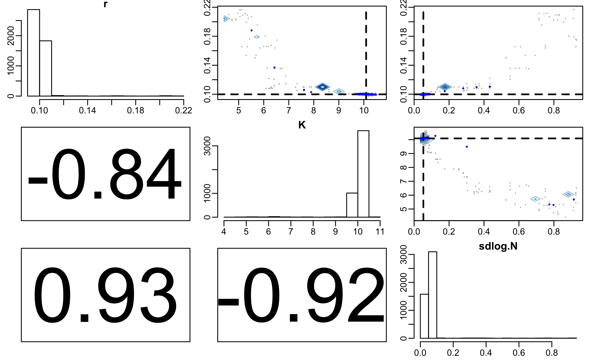
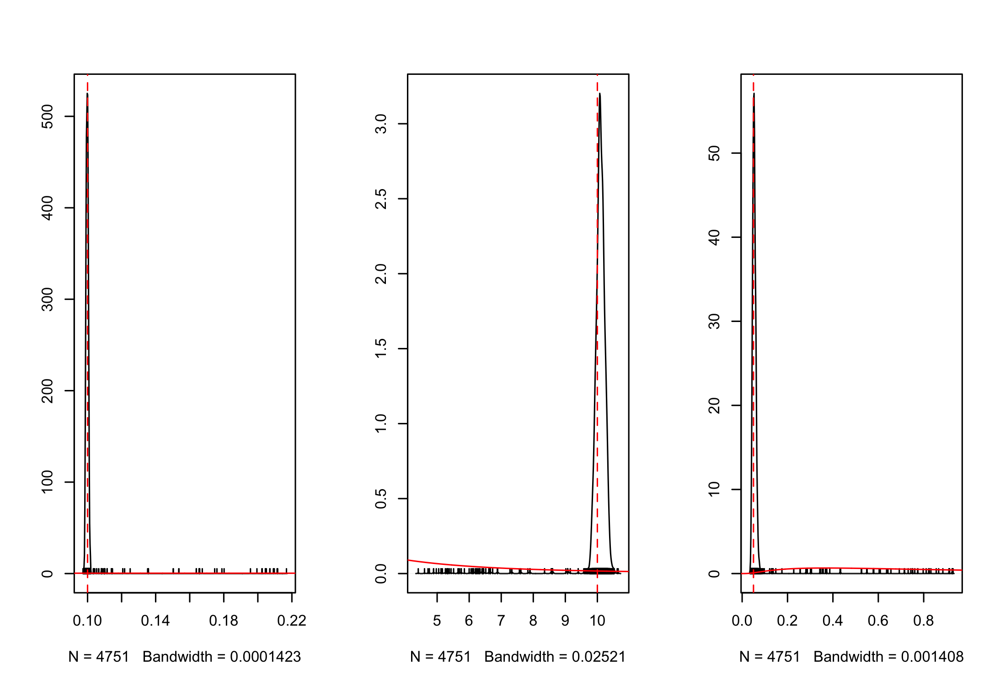
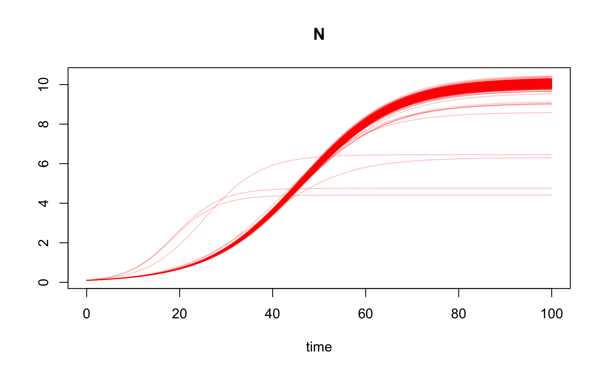

Bayesian inference for the logistic growth model
Philipp H Boersch-Supan, Sadie J Ryan, and Leah R Johnson
September 2016
Source:vignettes/logistic_ode_example.Rmd
logistic_ode_example.Rmd#Preliminaries This vignette illustrates the steps needed to perform inference for an ODE model, the logistic growth model. A detailed description of the rationale behind the Bayesian inference approach for differential equations can be found in the paper describing the deBInfer package (Boersch-Supan et al. 2017). The vignette also illustrates how to simulate noisy observations from an existing DE model. Conducting inference on a model with known parameters is good practice, when developing models for actual data, as it provides validation of the inference procedure.
This example assumes that deBInfer is installed and loaded. If this is not the case it needs to be installed from CRAN:
install.packages("deBInfer")Development versions of deBInfer are available on github, and can be installed using the devtools package (Wickham & Chang 2016).
if (require("devtools")){
#install deBInfer from github
devtools::install_github("pboesu/debinfer")
}#Defining the DE model
We define a logistic growth model \[\begin{equation}\frac{dN}{dt}=rN\left(1-\frac{N}{K}\right).\end{equation}\] and implement it for deSolve::ode (Soetaert et al. 2010):
library(deSolve)
logistic_model <- function (time, y, parms) {
with(as.list(c(y, parms)), {
dN <- r * N * (1 - N / K)
list(dN)
})
}We then pick a set of parameter values \((r=0.1, K=10)\) and an initial condition (\(N=0.1\)) and solve the model for these values.
y <- c(N = 0.1)
parms <- c(r = 0.1, K = 10)
times <- seq(0, 120, 1)
out <- ode(y, times, logistic_model, parms, method="lsoda")We can plot this numerical solution.
Simulating observations
Next we simulate a noisy dataset from this equation. We do this by sampling a random subset from the integration output
set.seed(143)
#force include the first time-point (t=0)
N_obs <- as.data.frame(out[c(1,runif(35, 0, nrow(out))),]) and we “add” lognormal noise with a known “observation” standard deviation \(\sigma^2_{obs}=0.05\).
# add lognormal noise
parms["sdlog.N"] <- 0.05
N_obs$N_noisy <- rlnorm(nrow(N_obs), log(N_obs$N),parms["sdlog.N"])
#observations must be ordered for solver to work
N_obs <- N_obs[order(N_obs$time),]
#Plot true and noisy observations
plot(N_obs$time, N_obs$N, ylim=c(0, max(N_obs$N,N_obs$N_noisy)))
points(N_obs$time, N_obs$N_noisy, col="red")
#Defining an observation model and parameters for inference
The appropriate log-likelihood for these data takes the form
\[\begin{equation}
\ell(\mathcal{Y}|\boldsymbol\theta) = \sum_t \ln\left(\frac{1}{\tilde{N_t}\sigma_{obs}\sqrt{2\pi}}\exp\left(-\frac{(\ln \tilde{N_t}-\ln (N_t+\varepsilon))^2}{2\sigma^2_{obs}}\right)\right)
\end{equation}\] where \(\tilde{N}_t\) are the observations, and \(N_t\) are the predictions of the DE model given the current MCMC sample of the parameters \(\boldsymbol{\theta}\). Further, \(\varepsilon\) is a small correction needed, because the DE solution can equal zero (or less, depending on numerical precision) (Johnson et al. 2013). \(\varepsilon\) should therefore be at least as large as the expected numerical precision of the solver. We chose \(\varepsilon= 10^{-6}\), which is on the same order as the default numerical precision of the default solver (deSolve::ode with method = "lsoda"), but we found that the inference results were insensitive to this choice as long as \(\varepsilon \leq 0.01\) . A sensitivity analysis for \(\varepsilon\) can be found at the end of this document.
This can be translated into an observation model function for deBInfer. The observation model function must have three named arguments data, sim.data, and samp, as these are used by the MCMC procedure to pass in the data (as a data.frame, i.e. indexed using the $ operator and the column names of the input data), the current state of the Markov chain (as a named vector), and the associated DE model solution (as a matrix-like object of class deSolve, i.e. indexed using the [ ] operator and the declared names of the state variables). We can access these inputs to define the data likelihood.
The user specifies the observation model such that it returns the summed log-likelihoods of the data. In this example the observations are in the data.frame column N_noisy, and the corresponding predicted states are in the column N of the matrix-like objectsim.data
# the observation model
logistic_obs_model <- function(data, sim.data, samp){
llik.N <- sum(dlnorm(data$N_noisy, meanlog = log(sim.data[,"N"] + 1e-6),
sdlog = samp[["sdlog.N"]], log = TRUE))
return(llik.N)
}All parameters that are used in the DE model and the observation model need to be declared for the inference procedure using the debinfer_par() function. The declaration describes the variable name, whether it is a DE or observation parameter and whether or not it is to be estimated. If the parameter is to be estimated, the user also needs to specify a prior distribution and a number of additional parameters for the MCMC procedure. deBInfer currently supports priors from all probability distributions implemented in base R, as well as their truncated variants, as implemented in the truncdist package (Novomestky & Nadarajah 2012).
We declare the DE model parameter \(r\), assign a prior \(r \sim \mathcal{N}(0,1)\) and a random walk sampler with a Normal kernel (samp.type="rw") and proposal variance of 0.005. Similarly, we declare \(K\sim \ln\mathcal{N}(1,1)\) and \(\ln(\sigma^2_{obs})\sim\mathcal{N}(0,1)\). Note that we are using the asymmetric uniform proposal distribution \(\mathcal{U}(\frac{a}{b}\theta^{(k)}, \frac{b}{a}\theta^{(k)})\) for the variance parameter (samp.type="rw-unif"), as this ensures strictly positive proposals.
library(deBInfer)
r <- debinfer_par(name = "r", var.type = "de", fixed = FALSE,
value = 0.5, prior = "norm", hypers = list(mean = 0, sd = 1),
prop.var = 0.0001, samp.type="rw")
K <- debinfer_par(name = "K", var.type = "de", fixed = FALSE,
value = 5, prior = "lnorm", hypers = list(meanlog = 1, sdlog = 1),
prop.var = 0.1, samp.type = "rw")
sdlog.N <- debinfer_par(name = "sdlog.N", var.type = "obs", fixed = FALSE,
value = 0.05, prior = "lnorm", hypers = list(meanlog = 0, sdlog = 1),
prop.var = c(3,4), samp.type = "rw-unif")Lastly, we provide an initial value \(N_0=0.1\) for the DE:
N <- debinfer_par(name = "N", var.type = "init", fixed = TRUE, value = 0.1)The declared parameters are then collated using the setup_debinfer function. Note that for models with more than one state variable, the initial values must be entered in the same order, as they are specified in the DE model function, as the solver matches these values by position, rather than by name. More details can be found in ?deSolve::ode. The remaining parameters can be entered in any order.
mcmc.pars <- setup_debinfer(r, K, sdlog.N, N)#Conduct inference Finally we use deBInfer to estimate the parameters of the original model. de_mcmc is the workhorse of the package and runs the MCMC estimation. The progress of the MCMC procedure can be monitored using the cnt, plot and verbose options: Every cnt iterations the function will print out information about the current state, and, if plot=TRUE, traceplots of the chains will be plotted. Setting verbose=TRUE will print additional information. Note that frequent plotting will substantially slow down the MCMC sampler, and should be used only on short runs when tuning the sampler.
# do inference with deBInfer
# MCMC iterations
iter <- 5000
# inference call
mcmc_samples <- de_mcmc(N = iter, data = N_obs, de.model = logistic_model,
obs.model = logistic_obs_model, all.params = mcmc.pars,
Tmax = max(N_obs$time), data.times = N_obs$time, cnt = 500,
plot = FALSE, verbose.mcmc = FALSE, solver = "ode")We plot and summarize the MCMC chains
plot(mcmc_samples)From the traceplot we can see that the burnin period extends through about 250 iterations. We can remove the burnin and have a look at parameter correlations using pairs.debinfer_result.
burnin <- 250
pairs(mcmc_samples, burnin = burnin, scatter=TRUE, trend=TRUE)
And we can look at the overlap between the posterior and prior densities using post_prior_densplot.
par(mfrow = c(1,3))
post_prior_densplot(mcmc_samples, burnin = burnin, param = "r")
abline(v = 0.1, col = "red", lty = 2)
post_prior_densplot(mcmc_samples, burnin = burnin, param = "K")
abline(v = 10, col = "red", lty = 2)
post_prior_densplot(mcmc_samples, burnin = burnin, param = "sdlog.N")
abline(v = 0.05, col = "red", lty = 2)
Overlay the true underlying parameter values as vertical dashed lines shows that our estimation is recovering the true parameters.
Posterior simulations
We then simulate DE model trajectories from the posterior and calculate the 95% highest posterior density interval for the deterministic part of the model.
post_traj <- post_sim(mcmc_samples, n=500, times=0:100, burnin=burnin, output = "all", prob = 0.95)We can visualise the median posterior trajectory and the associated highest posterior density interval using plot.type="medianHDI". The panel.first option can be used to add the trajectory of the true model, which is stored in out.
#median and HDI
plot(post_traj, plot.type = "medianHDI", lty = c(2,1), lwd = 3, col = c("red","grey20"),
panel.first = lines(out, col = "darkblue", lwd = 2)
)
legend("topleft", legend = c("posterior median", "95% HDI", "true model"),
lty = c(2,1,1), lwd = c(3,2,2), col = c("red","grey20","darkblue"),
bty = "n")
Again, this confirms that the inference procedure does indeed recover the true model.
Lastly, we can plot an ensemble of posterior trajectories using plot.type="ensemble"
plot(post_traj, plot.type = "ensemble", col = "#FF000040")
Sensitivity analysis for \(\varepsilon\)
Below is code to conduct a sensitivity analysis for the influence of the value of the correction factor \(\varepsilon\) in the observation model on the posterior parameter estimates. (The vignette makes use of a precompiled figure instead of evaluating the following code, as the execution takes about 10 minutes on a modern desktop computer).
For this purpose we modify the observation model slightly, so that \(\varepsilon\) can be passed in as an observation parameter, and we declare a corresponding debinfer_par with the name epsilon and add it to the parameter list.
#reformulate the observation model such that epsilon is an observation parameter
logistic_obs_model_eps <- function(data, sim.data, samp){
llik.N <- sum(dlnorm(data$N_noisy, meanlog = log(sim.data[,"N"] + samp[["epsilon"]]),
sdlog = samp[["sdlog.N"]], log = TRUE))
return(llik.N)
}
#declare epsilon
epsilon <- debinfer_par(name = "epsilon", var.type = "obs", fixed = TRUE,
value = 1e-6)
#set up MCMC parameters
mcmc.pars <- setup_debinfer(r, K, sdlog.N, epsilon, N)We can then manipulate the value of epsilon in list object mcmc.pars within an lapply call and conduct the inference for each value of eps_range.
# define a range of epsilon values
eps_range <- c(1e-6, 1e-5, 1e-4, 1e-3, 1e-2, 1e-1)
# conduct inference for each value of eps_range
eps_sims <- lapply(eps_range, function(x){
#reassign value of epsilon
mcmc.pars$epsilon$value <- x
eps_samples <- de_mcmc(N = 10000, data = N_obs, de.model = logistic_model,
obs.model = logistic_obs_model_eps, all.params = mcmc.pars,
Tmax = max(N_obs$time), data.times = N_obs$time, cnt = 500,
plot = FALSE, solver = "ode")
return(eps_samples)
})
# add names to the inference runs
names(eps_sims) <- as.character(eps_range)
# collate the samples in a data.frame for easy plotting while omitting
# a burnin of 1000 samples
eps_samps <- plyr::ldply(eps_sims, function(x)(x$samples[1000:10000,]), .id = "epsilon")
# plot sensitivity analysis
par(mfrow = c(1,3), mar = c(3,3,2,2), mgp = c(1.7,0.5,0))
beanplot::beanplot(eps_samps$r ~ eps_samps$epsilon, log = "", what = c(0,1,1,0),
col = "darkgrey", bw = 2e-4, maxwidth = 0.6, xlab = "epsilon",
ylab = "r")
legend("bottomleft", legend = c("posterior mean", "true value"), lty = c(1,3),
col = c("black", "red"), lwd = 2, bty = "n")
abline(h = 0.1, col = "red", lwd = 2, lty = 3)
beanplot::beanplot(eps_samps$K ~ eps_samps$epsilon, log = "", what = c(0,1,1,0),
col = "darkgrey", bw = 2e-2, maxwidth = 0.6, xlab = "epsilon"
, ylab = "K")
abline(h = 10, col = "red", lwd = 2, lty = 3)
beanplot::beanplot(eps_samps$sdlog.N ~ eps_samps$epsilon, log="", what=c(0,1,1,0),
col = "darkgrey", bw = 2e-3, maxwidth = 0.6, xlab = "epsilon",
ylab = "sdlog.N")
abline(h = 0.05, col = "red", lwd = 2, lty = 3)Influence of \(\varepsilon\) on the posterior parameter estimates
References
Boersch-Supan, P.H., Ryan, S.J. & Johnson, L.R. (2017). deBInfer: Bayesian inference for dynamical models of biological systems. Methods in Ecology and Evolution, 8, 511–518.
Johnson, L.R., Pecquerie, L. & Nisbet, R.M. (2013). Bayesian inference for bioenergetic models. Ecology, 94, 882–894.
Novomestky, F. & Nadarajah, S. (2012). Truncdist: Truncated random variables.
Soetaert, K., Petzoldt, T. & Setzer, R.W. (2010). Solving differential equations in R: Package deSolve. Journal of Statistical Software, 33, 1–25.
Wickham, H. & Chang, W. (2016). Devtools: Tools to make developing R packages easier.